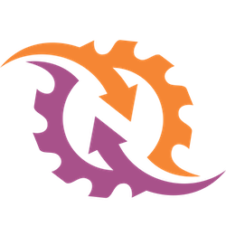

Creating a WebSocket server in PHP
Is it possible ?

 - PHP Conference Berlin
- PHP Conference Berlin

Stéphane Hulard
Consultant, Trainer, Contributor.
WebSocket ?
Standard real-time protocol
RFC 6455 released in 2011
Full-Duplex: Client to server and server to client
« Just » a protocol, language agnostic
A persistent connection
Different paradigm, different problems
Memory management, long running process, shared state between clients…
A chat with Ratchet
WebSocket server and client written in PHP
Built using ReactPHP ecosystem
ReactPHP ?
Event-driven,non-blocking I/Owith PHP
// 🤓 Low level libraries
You say EventLoop ?
Waits for and dispatches events or messages.
$loop = React\EventLoop\Factory::create();
// Register streams to listen on
$loop->run();
Non blocking streams ?
Everywhere,for everything…
$stdin = new React\Stream\ReadableResourceStream(STDIN, $loop);
$stdout = new React\Stream\WritableResourceStream(STDOUT, $loop);
Go back to Ratchet…
Two libraries: client and server.
# Server only
composer require cboden/ratchet
# Client only
composer require ratchet/pawl
Some specifications
Client must connect to Server
Client message are sent to other connected clients.
Client can define its name to identify himself.